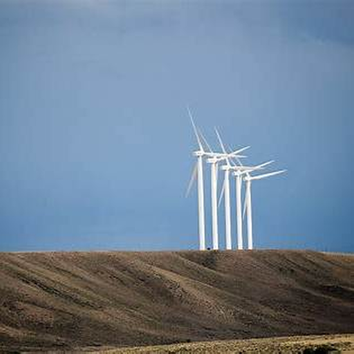
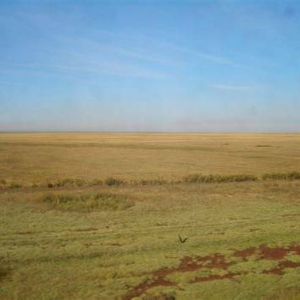

T1
Средняя мощность— МВт
— · загрузка

Выработка, прогноз и состояние данных. Всё, что нужно для следующего решения.

После расчёта здесь появится состояние обработки данных.
Горизонты для чистой энергии.
Технологии в ритме природы.
Прогноз обеих турбин по архивным выпускам погоды. Доступность данных проверяется перед расчётом.
Расписание команды: 23:00 Asia/Almaty. Время исходных CSV подтверждается отдельно.
Синтетическое демо доступно в выборе источника расчёта.
Проверяем подключение…
Надёжность оценивается по полноте входных данных и проверкам модели.
Результаты и флаги проверки появятся после расчёта.
Выберите доступный источник, дату и горизонт прогноза.
Расчёт ещё не запущен.